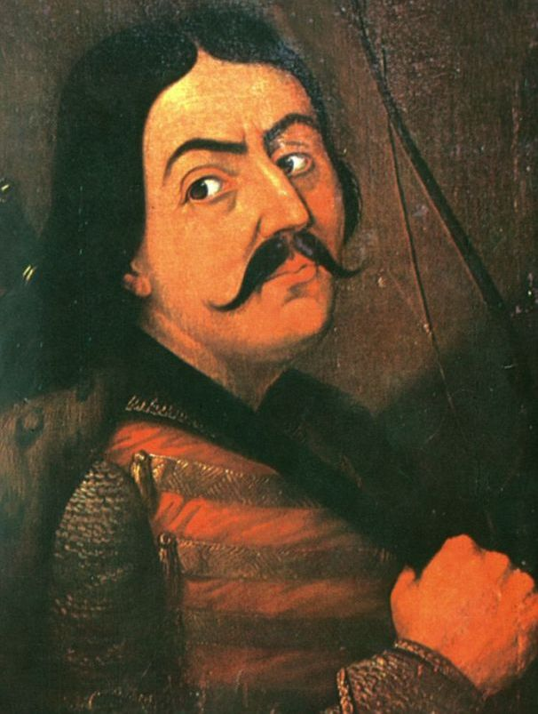
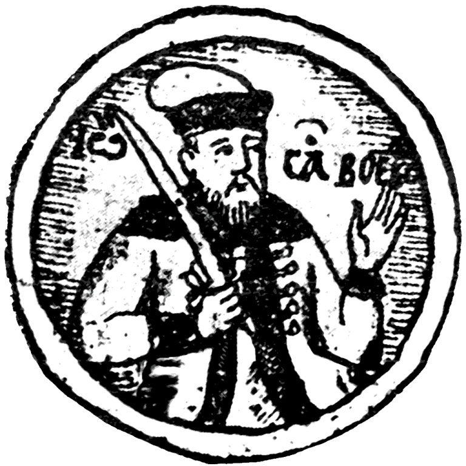
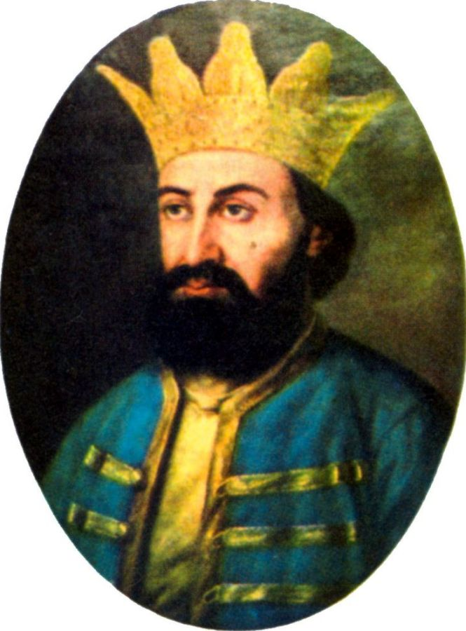
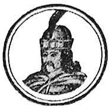
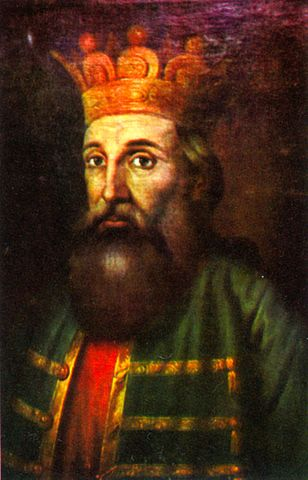
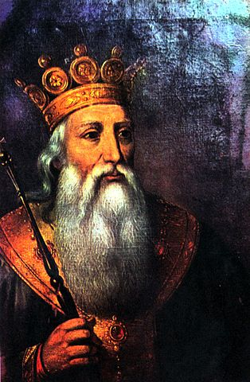
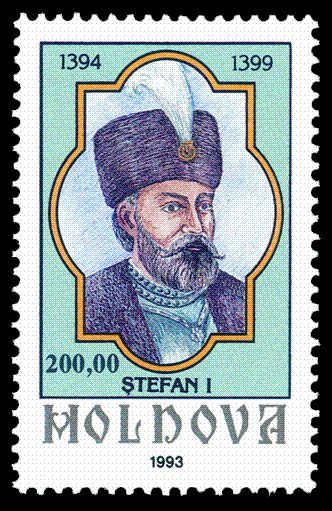

| Domnitorul: | Anii de domnie: | Imaginea: |
|---|---|---|
| Secolul al XIV-lea | ||
| Dragoș I | cca. 1352 — cca. 1354 |  |
| Sas | cca. 1354 — cca. 1358 |  |
| Balc | 1359 | |
| Bogdan I | 1363 — circa 1367 sau 1359 - 1363 |
 |
| Petru I | 1367 — iulie 1368 | |
| Lațcu | iulie 1368 — 1375 |  |
| Petru al II-lea sau Petru Mușat |
1375 — decembrie 1391 |  |
| Roman I | cca 1391 — decembrie 1394 |  |
| Ștefan I | decembrie 1394 — cca 1399 |  |
| Iuga Ologul | 28 noiembrie 1399 — 29 iunie 1400 | |